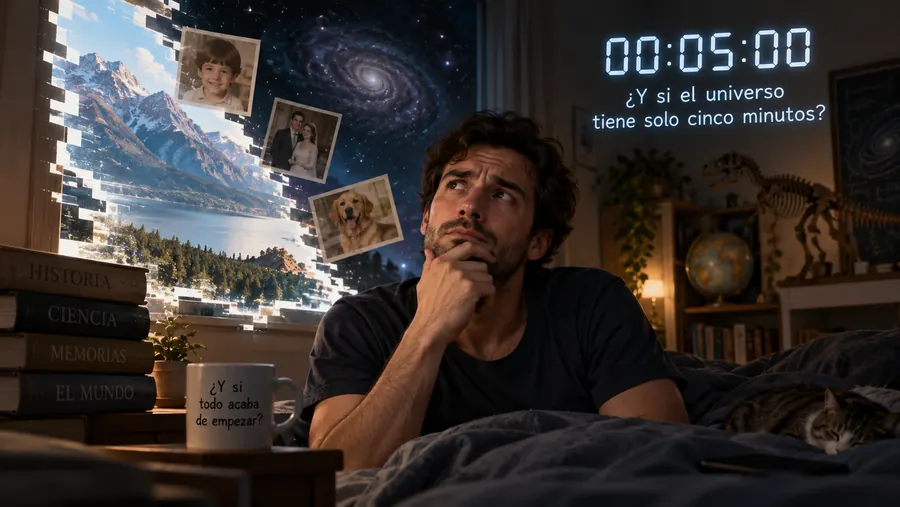

Nadie puede demostrar que ayer existiera
Bertrand Russell lo formuló en 1921: el universo pudo crearse hace cinco minutos, con recuerdos incluidos. No es una idea razonable, pero es lógicamente irrefutable.
La hipótesis es sencilla. Imagina que el universo entero apareció hace cinco minutos exactamente tal como está ahora: con las montañas erosionadas, los fósiles enterrados, los libros escritos y tu cabeza llena de recuerdos de una infancia que nunca ocurrió. Cualquier prueba que aportes contra esa idea (una foto antigua, una cicatriz, un testigo) forma parte del paquete que se creó hace cinco minutos.
Russell no lo proponía como creencia. Lo usaba como bisturí para separar dos cosas que solemos confundir: lo que es lógicamente imposible y lo que es razonable creer. La hipótesis de los cinco minutos no se puede refutar, y aun así nadie la sostiene, porque no explica nada nuevo y complica todo. Ese es exactamente el trabajo de la navaja de Occam.
El argumento tiene descendencia incómoda. El creacionismo del jueves pasado lo usa como parodia, y en cosmología reaparece bajo la forma del cerebro de Boltzmann: en un universo suficientemente grande y duradero, las fluctuaciones aleatorias producirían más observadores momentáneos con recuerdos falsos que observadores con una historia real detrás. Que la física seria tenga que buscar salidas a ese cálculo dice mucho del problema.
Fuente: Bertrand Russell, The Analysis of Mind (1921), capítulo IX.
Volver a la carta